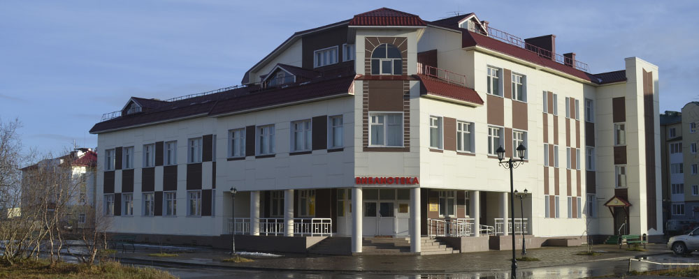
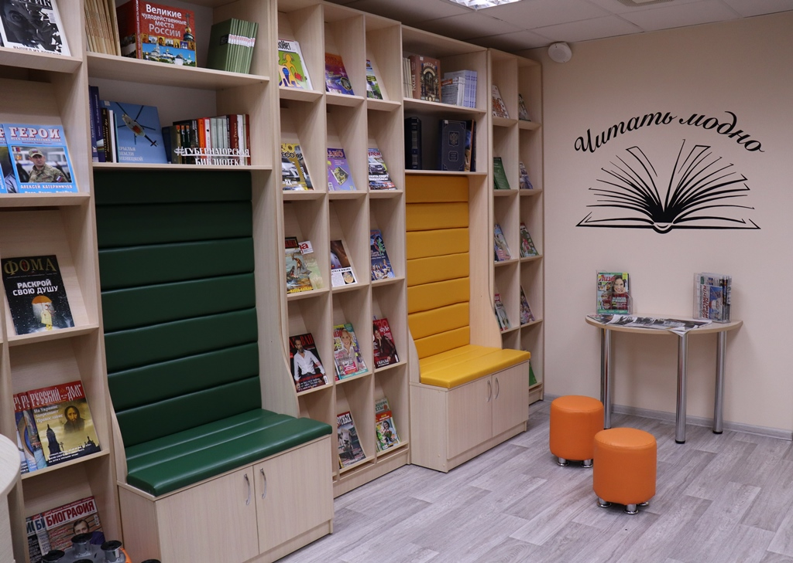
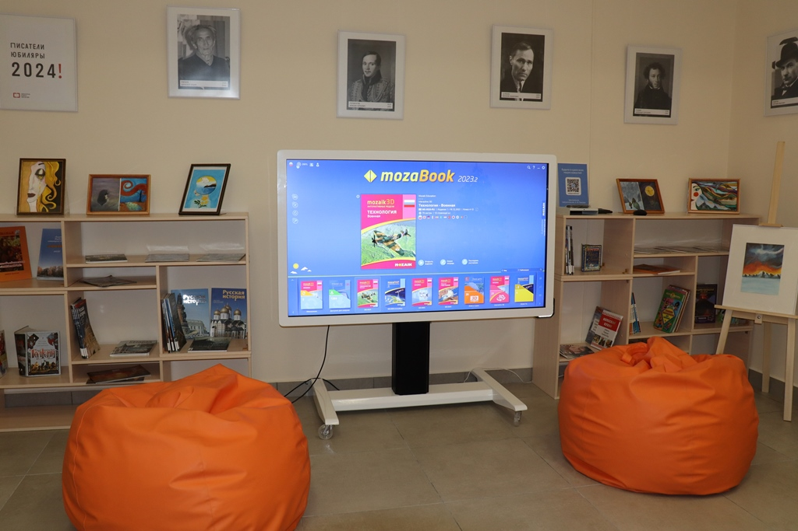

Обновлённый режим работы
С 1 сентября библиотека работает по обычному графику
Ждём читателей ежедневно с 11:00 до 19:00. Пятница — выходной день.

Знакомство с культурой, историей и природой Русского Севера по Пушкинской карте.
ПодробнееПамятная дата Российской Федерации.
День уважения, внимания и благодарности старшему поколению.
Посещайте события библиотеки по федеральной программе.
Узнать больше Доступ из библиотекиНациональная электронная библиотека, периодика и справочные системы.
Открыть раздел Ваше мнение важноОтветьте на несколько вопросов и помогите нам стать лучше.
Пройти опрос

Ненецкая центральная библиотека имени А. И. Пичкова — модельная библиотека нового типа и открытое городское пространство. Здесь можно работать, учиться, встречаться, открывать новые книги и исследовать культуру Севера.
Центральная библиотека и филиалы в населённых пунктах Ненецкого автономного округа.